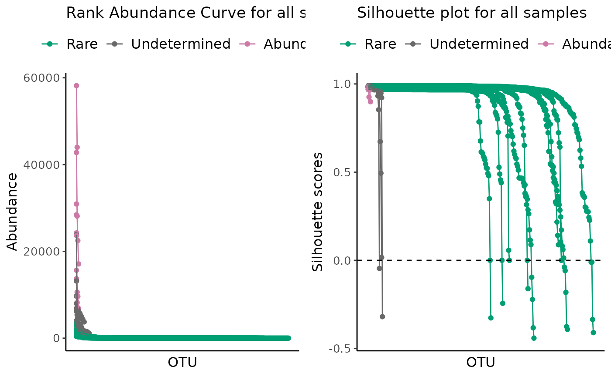
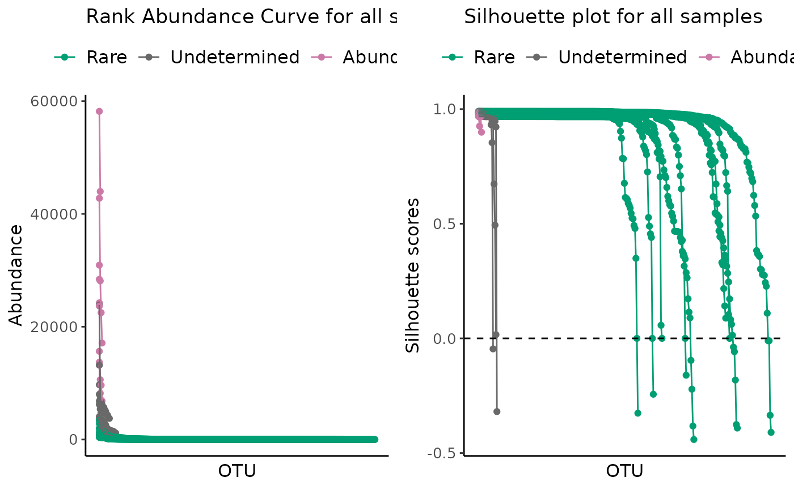

ulrb: Unsupervised Learning Based Definition of Microbial Rare Biosphere
ulrb-package.RdThe R package ulrb stands for Unsupervised Machine Learning definition of the Rare Biosphere. As the name suggests, it applies unsupervised learning principles to define the rare biosphere.
More specifically, the partitioning around medoids (k-medoids) algorithm is used to divide phylogenetic units (ASVs, OTUs, Species, …) within a microbial community (usually, a sample) into clusters. The clusters are then ordered based on a user-defined classification vector. By default, our method classifies all phylogenetic units in one of these: “rare”, “undetermined” or “abundant”. In alternative, we provide functions to help the user decide the number of clusters and we also provide a fully automated option. Besides clustering, we have functions to help you evaluate the clustering quality (e.g. silhouette scores).
For detailed theory behind our reasoning for this definition of the microbial rare biosphere, results and applications, see our paper Pascoal et al., 2023 (in preparation). For more details on the R functions used and data wrangling please see the package documentation.
References
Pascoal, F., Paula, B., Torgo, L., Costa, R., Magalhães, C. (2023) Unsupervised machine learning definition of the microbial rare biosphere Manuscript in preparation.
Author
Francisco Pascoal fpascoal1996@gmail.com, Paula Branco paobranco@gmail.com, Luis Torgo, Rodrigo Costa rodrigoscosta@tecnico.ulisboa.pt, Catarina Magalhães catarinamagalhaes1972@gmail.com
Maintainer: Francisco Pascoal
Examples
# \donttest{
library(ulrb)
# nice is an OTU table in wide format
head(nice)
#> ERR2044662 ERR2044663 ERR2044664 ERR2044665 ERR2044666 ERR2044667 ERR2044668
#> 1 165 323 51 70 134 216 0
#> 2 0 0 1 0 0 1 0
#> 3 0 0 1 2 2 6 0
#> 4 541 1018 351 115 241 1633 177
#> 5 8 5 41 15 14 146 0
#> 6 15 31 590 133 174 1814 12
#> ERR2044669 ERR2044670 OTU Domain Phylum
#> 1 11 0 OTU_2 sk__Archaea p__Euryarchaeota
#> 2 0 0 OTU_3 sk__Archaea p__Euryarchaeota
#> 3 0 0 OTU_4 sk__Archaea p__Euryarchaeota
#> 4 1371 7 OTU_5 sk__Archaea p__Euryarchaeota
#> 5 14 0 OTU_6 sk__Archaea p__Thaumarchaeota
#> 6 173 2 OTU_7 sk__Archaea p__Thaumarchaeota
#> Class Order Family
#> 1 c__Candidatus_Poseidoniia <NA> <NA>
#> 2 c__Candidatus_Poseidoniia o__Candidatus_Poseidoniales f__
#> 3 c__Halobacteria o__Halobacteriales <NA>
#> 4 c__Thermoplasmata <NA> <NA>
#> 5 <NA> <NA> <NA>
#> 6 c__ o__ f__
#> Genus Species
#> 1 <NA> <NA>
#> 2 g__ s__Marine_group_II_euryarchaeote_REDSEA-S03_B6
#> 3 <NA> <NA>
#> 4 <NA> <NA>
#> 5 <NA> <NA>
#> 6 g__Candidatus_Nitrosopelagicus <NA>
# first, we tidy the "nice" OTU table
sample_names <- c("ERR2044662", "ERR2044663", "ERR2044664",
"ERR2044665", "ERR2044666", "ERR2044667",
"ERR2044668", "ERR2044669", "ERR2044670")
# If data is in wide format, with samples in cols
nice_tidy <- prepare_tidy_data(nice,
sample_names = sample_names,
samples_in = "cols")
# second, we apply ulrb algorithm in automatic setting
nice_classification_results <- define_rb(nice_tidy)
#> Joining with `by = join_by(Sample, Level)`
# third, we plot microbial community and the quality of k-medoids clustering
plot_ulrb(nice_classification_results, taxa_col = "OTU", plot_all = TRUE)
 # In case you want to inspect the result of a particular sample, do:
plot_ulrb(nice_classification_results, taxa_col = "OTU", sample_id = "ERR2044662")
#> Warning: If you want to plot only ERR2044662 use plot_all = FALSE
#> Warning: If you want to plot only ERR2044662 use plot_all = FALSE

# }
# In case you want to inspect the result of a particular sample, do:
plot_ulrb(nice_classification_results, taxa_col = "OTU", sample_id = "ERR2044662")
#> Warning: If you want to plot only ERR2044662 use plot_all = FALSE
#> Warning: If you want to plot only ERR2044662 use plot_all = FALSE

# }